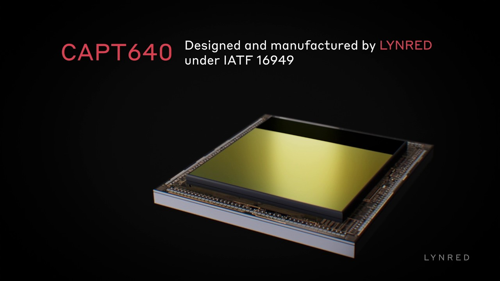

厳選ニュース (5選)
1.【夜間・全天候】 LYNREDが車載サーマルセンサー「CAPT640」を展開
仏赤外線センサー大手のLYNREDは、可視光カメラが苦手とする夜間や悪天候下での歩行者検知を補完する、車載品質規格対応のサーマルセンサー「CAPT640-02」を発表しました。
なぜ重要か：
- 「暗闇」と「悪天候」の死角を解消： 外光変化やヘッドライトグレアに影響されない熱画像により、最大228m先までの歩行者を確実に捉えます。
- 厳しい車載品質に対応： AEC-Q100 Grade 3およびIATF 16949に準拠。量産車の自動ブレーキ（AEB）や自動運転レベル3以上での冗長性確保に即応する仕様です。
2.【市場】 車載LiDAR世界市場、2033年までに約112億ドル規模へ急拡大
市場調査レポートによると、世界の車載LiDAR市場は2026年の17億ドルから、2033年には112.6億ドルへと年平均成長率（CAGR）31%で爆発的に拡大する見通しです。
なぜ重要か：
- ソリッドステート化による量産と低価格化： 小型化・半導体化（ソリッドステート化）やサプライヤーの量産競争により、部品単価が急降下しています。
- AD/ADASの「必須センサー」に定着： カメラ単独の限界を補う3D認識手段として、自動運転レベル3/4の実装に欠かせないインフラへと昇格しています。
3.【周辺認識】 ティアフォーが120°広角の車載カメラを追加、死角を削減
自動運転スタートアップのティアフォーは、レベル4運行に最適化したカメラ「MPシリーズ」に、画角120度の新モデル「C1 120° / C2 120°」を追加しました。
なぜ重要か：
- 交差点や狭い道路での「見落とし」を防ぐ： 死角になりやすい自車周辺の広角視野を確保。複数センサーの重複カバレッジにより、市街地走行の認識冗長性が向上します。
- カメラ台数と配線の最適化： 近距離は広角、遠方は狭角カメラと役割を分担。認識力を保ったまま、車両全体の艤装コストを抑えます。
4.【データ循環】 現代自動車が「AIデータフライホイール」を本格稼働、開発を高速化
現代自動車グループは、実走行データ収集から学習、仮想検証、車両への再展開までを全自動化する「データフライホイール」の本格稼働を開始しました。
なぜ重要か：
- 自動学習による「進化の高速化」： 現場のレアケース（難例）を自動で抽出してAIに継続学習させ、認識精度を自律的に高め続けます。
- 開発・検証コストを半減以下に： 人的なアノテーション（ラベル付け）やテスト走行のプロセスをデジタルツイン（仮想空間）上で自動化し、SDV開発スピードを劇的に高めます。
5.【SDV】 車載AI世界市場、2036年までに2,444億ドル規模到達へ
車載向けAI市場は、運転支援システム（ADAS）の高度化とSDV（ソフトウェア定義車両）の台頭を背景に、2036年までに2,444億ドル規模に達すると予測されています。
なぜ重要か：
- 「カメラ単体」から「統合フュージョン」へ： AIが複数のセンサーデータを一元処理する「センサーフュージョン」の処理ニーズが市場急成長を牽引しています。
- 継続アップデートが当たり前の時代に： OTA（無線通信）によるアルゴリズムの更新が前提となり、チップからデータ処理基盤まで車載インフラの再定義が進んでいます。
ピックアップ製品・ソリューション
LYNRED車載サーマルセンサー「CAPT640」
夜間・豪雨・逆光下でも100%の認識冗長性を確保する、AEC-Q100適合サーマルIMAGER

なぜ重要か：
- 可視光カメラの「全滅」を防ぐバックアップ： ヘッドライトグレアや夜間、濃霧などでカメラやLiDARが失明・減衰する中、熱源（歩行者・生物）を100%パッシブ検知。衝突防止のラストリゾート（最後の砦）になります。
現場課題への解決アプローチ：
- 歩行者検知の距離を最大228mへ延伸： VGA（640x480）高解像度による緻密な熱識別。ハイビームが届かない距離でも遠方の危険をいち早くセンシング。
- 車載実装のハードルを低減： AEC-Q100 Grade 3やIATF 16949取得済み。量産プロセスのPPAPに対応し、フロントグリルやバックミラー裏への搭載がスムーズに。
- ADASとADシステムへの容易な統合： デジタル出力や堅牢なベアダイ設計。既存の画像処理AIや統合ECUとの接続がスムーズで、全天候フュージョンの実装を加速。
| メーカー / 型式 |
LYNRED（リンレッド） / CAPT640 |
| センサー解像度 |
VGA（640 × 480ピクセル） |
| ピクセルピッチ |
12μm（高感度な非冷却マイクロボロメータ） |
| 対応波長帯 |
LWIR（長波赤外線：8〜14μm） |
| 適用車載規格 |
AEC-Q100 Grade 3、IATF 16949 準拠 / PPAPプロセス対応 |
| 検知能力 |
夜間・悪天候下で最大228m先の歩行者を識別可能 |
| インターフェース |
デジタル出力（ADASやECU統合用ボードに適合） |